Toothless is the last known Night Fury and the dragon companion of Hiccup. He is intelligent, playful, and fiercely loyal. Together, they unite humans and dragons in peace across the Viking lands.
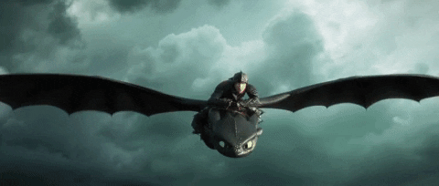
Toothless can fire concentrated plasma blasts that glow purple-blue and explode on impact with great destructive force.
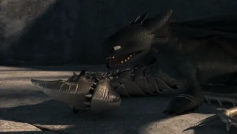
His sleek black scales allow him to blend into the night, combined with unmatched aerial maneuverability.
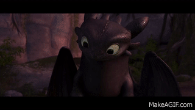
Toothless learns quickly, solves problems, communicates emotionally, and deeply bonds with Hiccup.
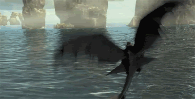
Toothless is incredibly fast and agile, capable of precision flying, especially with Hiccup’s tailfin.

As an Alpha dragon, Toothless glows bioluminescent blue and can command other dragons using non-verbal signals.
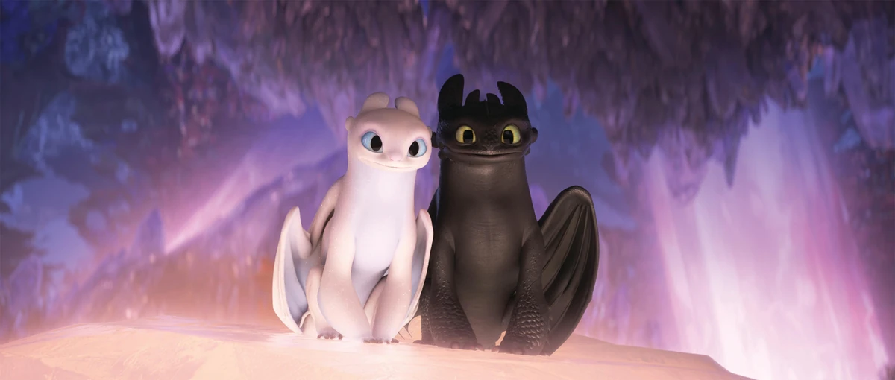
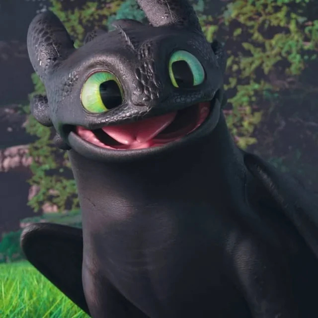
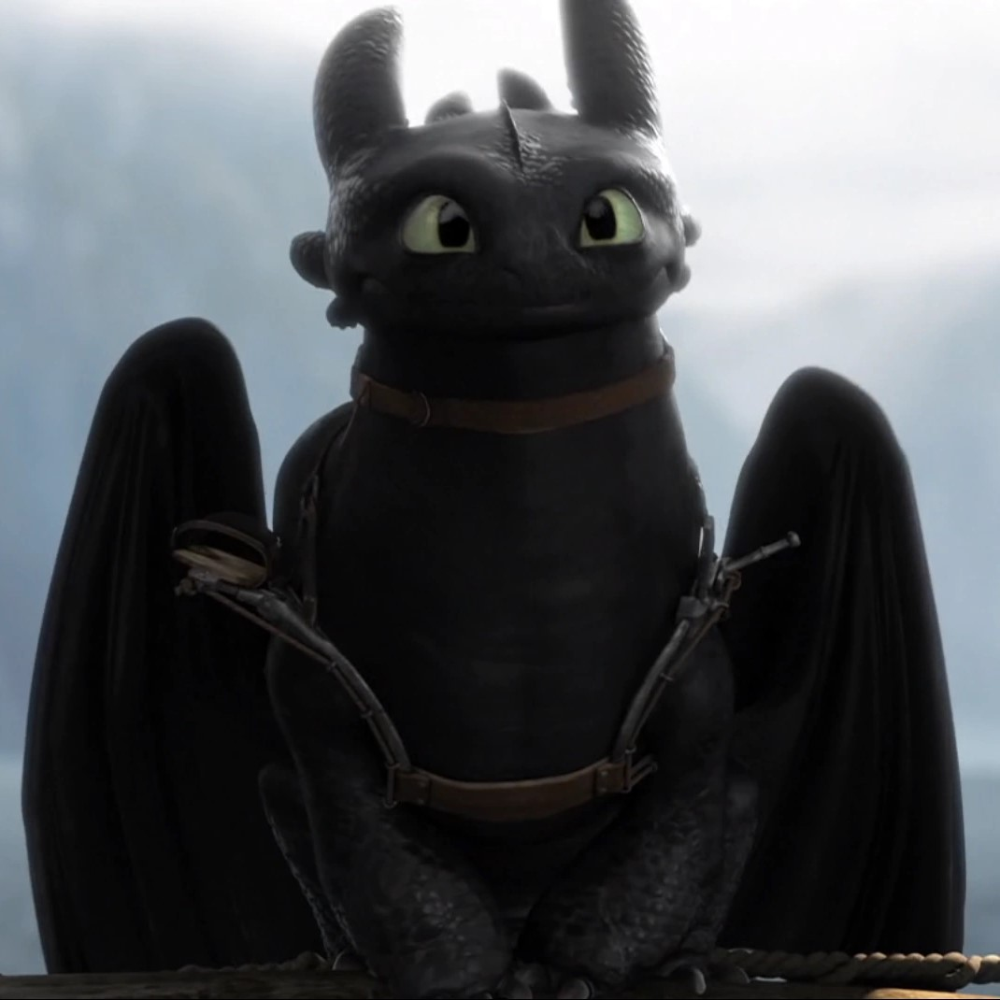
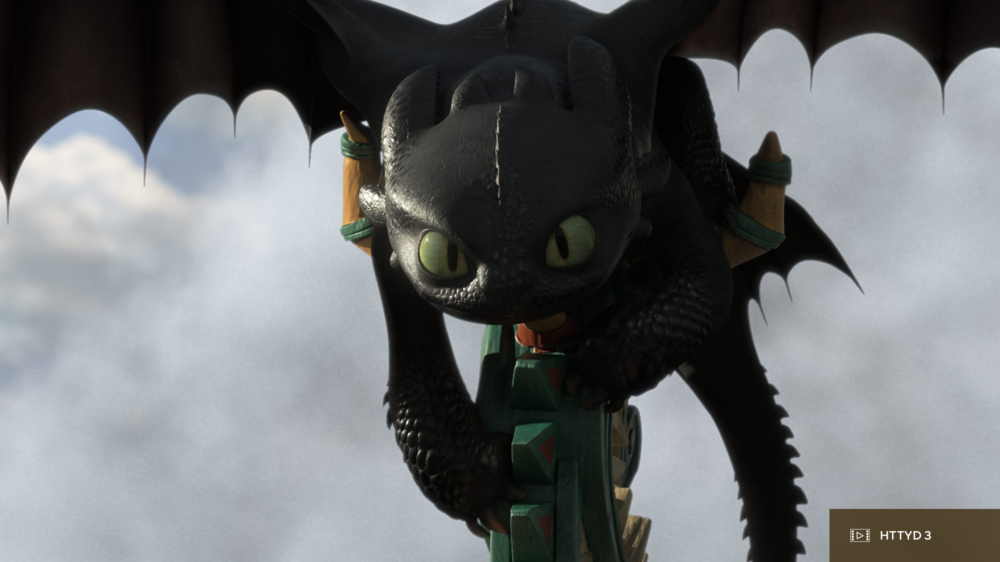

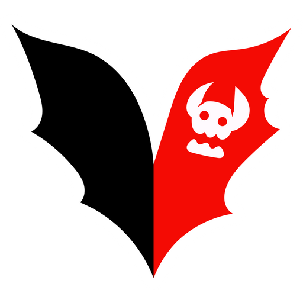
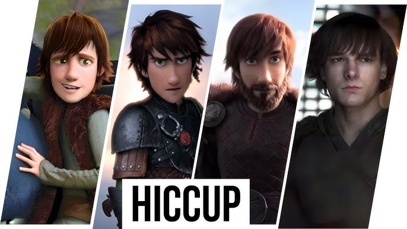
The closest thing Toothless has to a family member — more like a brother or soulmate.
Toothless’s mate and the mother of his three children in The Hidden World.
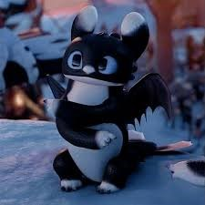
Appearance:
Personality:
Fun Fact:
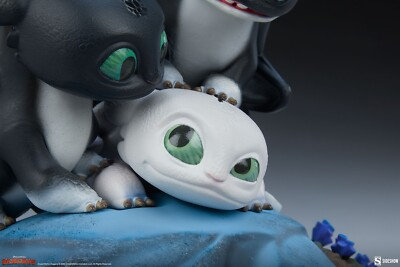
Appearance:
Personality:
Fun Fact:
Appearance:
Personality:
Fun Fact:
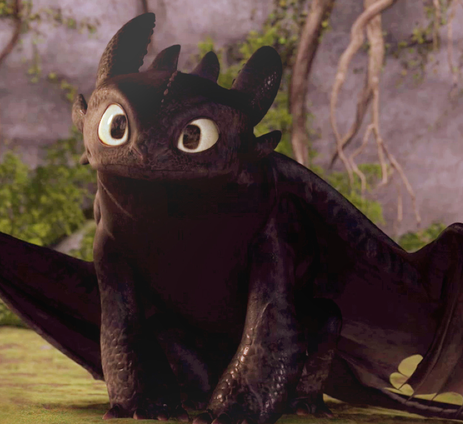
Toothless is the most intelligent of all known dragons, and seems to have a dry sense of humor, similar to that of Hiccup. When Hiccup released him, he did not kill Hiccup, as it is possible that he sensed goodness in the boy, or that he was simply repaying the favour by leaving him alive. He was still very wary and would not let Hiccup near him for several days.
He doesn't take kindly to being offended and is very protective of his human friend. He is usually quite playful and even a little teasing. He shows a sense of great curiosity, imitating Hiccup's actions and mannerisms when they initially encounter one another and can understand Hiccup's words and commands as well as agree with some of what he says. It is shown that he has become aware of Hiccup's relationship with Astrid, even seeming to briefly tease him about it, even though he did somewhat create it with the Romantic Flight scene in How to Train Your Dragon, which Toothless did to get Hiccup and Astrid together.
Toothless can display a bit of an attitude at times, reflecting his shared dry humor with Hiccup. He isn't easily intimidated, and his daring bravado can get him into trouble at times. He is also not above using violence to reach an end unlike Hiccup, but will usually refrain when told to do so.
Overall, the biggest attributes of Toothless' personality come through in his relationship with Hiccup. Equally protective and loyal, he never hesitates to risk his own life when Hiccup is put in danger and is more than affectionate when the time calls for it. His sense of devotion also shows itself when protecting Hiccup's allies and other friends. Toothless has shown to have a bit more of Hiccup's personality when battling Sleuther, seeing the fear in the other dragon's eyes, as it reminded him of when he had his first encounter with Hiccup. Other examples where he is willing to help other dragons is when protecting Bolt & Float from a Scauldron pod and the Night Terrors from the Changewing pack. There are several points when Toothless could choose to save himself or die along with Hiccup, and he chooses not to leave Hiccup's side.
Toothless, although he cannot speak, shows a lot of emotions through his facial expressions and body language. Toothless has even been shown to make a laughing sort of noise and often gives a few critical looks if he doesn't like the looks of something.